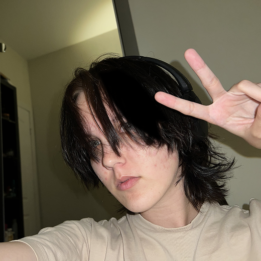

Разрабатывала и финализировала key visual. Масштабировала визуалы
до event набора носителей, оперативно готовила печатные макеты
и находила ускоряющие процесс скрипты для обработки множества
текстов. Подготавливала pptx шаблоны с ассетами графики,
веб-рассылки. В этих же кейсах анимировала KV и моушен-заставки
к выступлениям, 2D и 3D.
Улучшала тендерные презентации вместе с креат.продом и стратегами,
благодаря чему защиты тендеров проходили успешно и утверждались
предложенные решения. Использовала нейросети изображений
и помогала другим отделам включить в работу доступные и удобные
в пользовании в самой Фигме.
Была активно включена
в дизайн-поддержку запустившегося ресторанного проекта, учитывая
регулярность обновлений печатных и диджитал носителей. К нему же,
на этапе брендинга, создавала иллюстрации и motion концепты.
Доработала гайдлайн по мере реализации сценариев и сделала удобным
для передачи другим дизайнерам. Создала макет и сопровождала
разработку сайта этого HoReCa проекта.
Оптимизировала внутренние дизайн-системы, создавала темплейты
(шаблоны) для гайдлайнов проектов брендинга, веб-кейсов агенства.
Заполняла и следила за точностью мета-данных сайта при переносе
кейсов на Tilda. По итогу работы, оказывала помощь в большинстве
задач дизайн-отдела, кроме внешних, клиентских защит (коммуникация
с ими в агентстве остается под ответственностью арт-директора
и старших коллег)
Дизайнила учебные материалы, презентации для лекционных пар. Помогала с арт-дирекшеном проектов студентов цифрового продукта: изучали как базовый сторителлинг в лэндингах, так и user flow в комплексных, многостраничных сайтах. Адаптировала методичку под более исследовательский процесс — рассматривали много примеров коммерческих и артовых кейсов для нахождения фич-референсов и переноса в свои пробные кодинг-работы.
Была на аутсорсе при ресторанном проекте Unica и баре Segreto на Патриарших. Дизайнила и обновляла презентации, посты для соц.сетей, рисовала иллюстрации и работала с графикой сезонных макетов и мероприятий.
Делала дизайн для «коммерческого предложения» / тендера внутри компании. Команда запросила стиль к мероприятию к 20-летию компании и ряд носителей. Находясь с ними в одном городе, я также изготовила образцы мерча для презентации идеи, нашла возможного подрядчика для тиража и рассчитала смету для производства сувенирки. Кроме этого, помогла команде переработать презентацию структурно и в оформлении. Благодаря этому, команда успешно защитила свое предложение и заняла среди других первое место :)
Помощь знакомым коллегам с рендерами малых архитектурных форм и навигации.
Моделила и рендерила визуализации мира, в рамках которого существуют мотоциклы nft-коллекции. Отрисовывала принтов к коллекции шлемов и переносила в модели. Сделала большой пак вариативности моделей к апгрейду уровня для игры. Изучила перенос моделей между программами и оптимизировала геометрию, с подготовкой текстур для unreal engine
